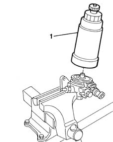

1044B20 fuel filter filtering element - replace
- Path
- Procedures > 10 ENGINE UNIT > 1044 FUEL CIRCUIT PUMP/S AND DEVICES > 1044B fuel filters > 1044B20 fuel filter filtering element - replace
- Kind
- repair procedure (removal / refitting; the operation number is the code)
- Applies to
- engines: 1.9 JTD 8V; all production periods
- Interactive page
- https://sloeber94.github.io/elrnDB-fMltpl/en/#/2891385
Applies to: engines: 1.9 JTD 8V; all production periods
 Removing
Removing
 Refitting
RefittingOpen the bonnet lid.
1044B10 fuel filter assembly - r + r or replace
Position the fuel filter assembly in a vice fitted with protective jaws.
1. Undo and remove the fuel filter filter element.

Applies to: engines: 1.9 JTD 8V; all production periods
Refitting
RemovingFit a new filter element.
Remove the fuel filter from the vice.
1044B10 fuel filter assembly - r + r or replace
Close the bonnet lid.
Topics linked from this page (1)
Topics that link to this page (25)
- B16 ENGINE STARTS WITH DIFFICULTY'
- B20 ENGINE STARTS, AND CUTS OUT STRAIGHT AWAY
- D04 ENGINE NOT RUNNING SMOOTHLY
- D10 ENGINE IDLE IRREGULAR
- D21 ENGINE CUTS OUT WHILST DRIVING
- X01 EXCESSIVE FUEL CONSUMPTION
- 0010K20 20,000km service coupon, emission control version
- 0010K21 20,000km service for emission control versions with a/c
- 0010K40 40,000km service coupon, emission control versions
- 0010K48 40,000km service for emission control versions with a/c
- 0010K60 60,000km service coupon - emission control versions
- 0010K61 60000 service coupon, emission control version
- 0010K80 80,000km service coupon - emission control versions
- 0010K85 80,000km service for emission control versions with a/c
- 0010M01 100,000km service coupon, emission control versions
- 0010M08 1000,000km service for emission control versions with a/c
- 0010M20 120,000km service coupon, emission control versions
- 0010M21 120000 km service coupon for emission control versions with air conditioner
- 0010M40 140,000km service coupon - emission control versions
- 0010M41 140,000km service for emission control versions with a/c
- 0010M60 160,000km service coupon - emission control versions
- 0010M68 160,000km service for emission control versions with a/c
- 0010M80 180,000km service coupon - emission control versions
- 0010M81 180000 km service coupon foe emission control versions with air conditioner
- 1044D10 fuel heater - r + r